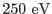
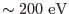
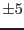
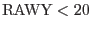
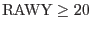
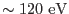
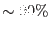

While there is practically no detector noise present at energies above
, X-ray data below
 are considerably
contaminated by noise events, which become more and more dominant towards the
lowest transmitted energies (Fig.1). Investigations of
40 hours of in-orbit calibration data with the filter wheel closed, taken
over a period of more than two years, showed that the noise properties vary
with position and energy, but are fairly stable in time for most areas on the
detector. This property enables a statistical approach for suppressing the
detector noise. The task uses the information about the spatial and spectral
dependence of the detector noise in order to flag and optionally remove, on a statistical basis, the
amount of events which correspond to the expected noise.
Apart from a dramatic reduction of the event file size (if the noise
events are physically removed) this procedure thus has the additional
advantage to correctly treat the spatial and spectral
properties of the detector noise in a more straightforward manner than
would be possible by conventional background subtraction.
The noise properties were derived from a total of 10 exposures with closed filter wheel between XMM-Newton revs. 129 and 532, yielding a total exposure time of 144 ks. These measurements were first corrected for offset shifts (see above) and then used for accumulating PHA spectra below 65 adu, individually for each CCD row. The fine spacing in RAWY was chosen because the noise properties change considerably with distance from the readout node, in particular close to the CAMEX. In order to get a sufficient number of events, no subdivision was made along the CCD rows (i.e. along RAWX). This approach was motivated by the fact that the noise properties do not show a pronounced dependence along this direction (unless there is a bright column). As the resulting spectra suffered somewhat from low count rate statistics, they were smoothed along RAWY with a running median filter extending over  rows. This smoothing was not applied to rows with , where the spectra contained more counts and where the dependence of the spectra on RAWY was high.
For the flagging of potential noise events in a specific observation, the number of events in each (CCDNR, RAWY, PHA) bin is compared with the corresponding value in the noise data (scaled to the same exposure). According to the ratio between the actual number of events and the expected noise contribution in each (CCDNR, RAWY, PHA) bin, individual events are then randomly flagged. In order to improve the statistics somewhat, the spectra from the observation to be corrected are internally smoothed by a running median filter along RAWY, for rows with , in a similar way as the noise spectra, before the noise contribution is computed. The data set itself, however, remains unchanged by this task, except for receiving the additional flags.
The data from exposures where the filter wheel was closed, show that the noise properties may exhibit some temporal variations, which are usually similar in all CCDs of a quadrant. In order to allow some fine tuning to an individual observation, twelve parameters can be controlled by the user. These parameters noiseparameters specify the relative amount of noise in each CCD. An additional parameter controls the maximum percentage of events in each (CCDNR, RAWY, PHA) bin, which may be considered as noise. This parameter should be set to a value which is slightly below 100% (default: 98%), to take the fact into account that even in the exposures with the filter wheel closed, which were used for deriving the noise properties, not all events are due to detector noise. There is, e.g., some additional flux present from fluorescence at the filter wheel itself, triggered by energetic particles. This component would change with the position of the filter wheel. The appropriate setting of these parameters should be checked by accumulating an image of all events with low PHA values (below ) which were not flagged as noise events. If there was no bright, extended X-ray source in the field of view, then the events should be distributed homogeneously across the image.
If a satisfactory suppression of noise events can be achieved, then this task allows to extend the useful energy range to an instrumental energy of . Below this energy, parts of the detector become essentially insensitive due to the low energy threshold applied onboard and the combined effect of charge transfer loss and gain variations within the 768 amplifiers in the EPIC-pn camera. In addition to the improvement of the data quality, removing the events which were flagged as noise events will also make the files considerably smaller and easier to handle. Tests have shown that up to  of all the events can be removed from the original data set by this method (e.g.Fig.6).
Tests with exposures taken between XMM-Newton revs. 129 and 532 indicate that the noise properties did not change much during this period. However, there may be cases where the noise properties deviate significantly from the behavior expected by this task. This may have happened in particular early in the mission when the offset map was computed with a different method
This task was verified to yield satisfactory results down to exposures of